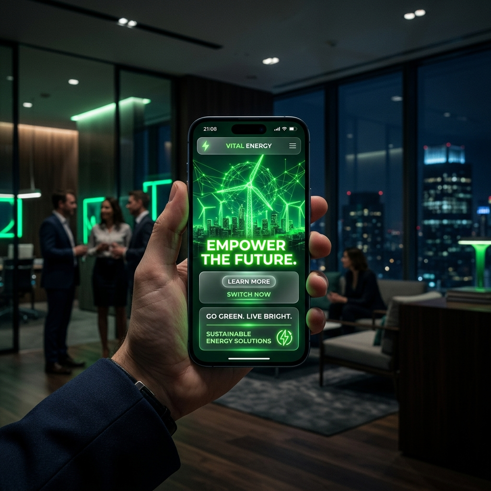

.png)

With the rise of TikTok, Reels, and YouTube Shorts, ClimateTech companies must adapt their messages to mobile screens to maximize their visibility. The digital landscape has fundamentally shifted, and B2B audiences are no exception to this mobile-first trend.
In the B2B green energy sector, a persistent misconception is that professional content must be horizontal, lengthy, and heavily produced. The reality is quite different: decision-makers, executives, and procurement officers are consuming content on their mobile devices during commutes, between meetings, or while traveling.
The Shift to Vertical and Algorithmic Favoritism
Vertical video takes up 100% of a mobile screen, removing distractions and fully immersing the viewer in your sustainable message. More importantly, the algorithms of major platforms—including LinkedIn, which has increasingly embraced vertical video feeds—actively prioritize this format. When you publish a 9:16 video, you are essentially signaling to the platform that your content is optimized for their most active users.
Psychology of the Vertical Screen
Unlike horizontal video, which often feels like a traditional broadcast or television commercial, vertical video feels native, personal, and authentic. It mimics the way we communicate with friends and family via video calls. For a green tech company trying to build trust around complex sustainability claims, this perceived authenticity is invaluable.
Engagement Rates and ROI
Recent studies in B2B marketing show that 9:16 content yields up to 40% higher engagement rates compared to traditional 16:9 videos when promoting green technology solutions. This translates to lower cost-per-click (CPC) on paid campaigns and significantly higher completion rates on organic posts. The ROI of adapting your content strategy to include vertical assets is no longer debatable.
Actionable Tips for Your Next Campaign
Keep your core message under 60 seconds. Start with a strong hook—such as a startling statistic about carbon reduction or an immediate ROI benefit—within the first three seconds. Ensure that your visuals are striking even on a small screen, and always add clear, stylized captions, as over 75% of executives watch mobile video with the sound off.